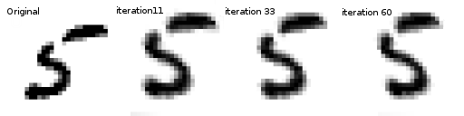
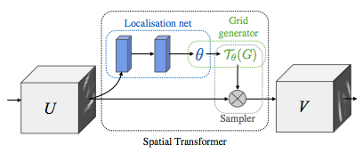

空间变换器网络教程
译者：冯宝宝
作者: Ghassen HAMROUNI

在本教程中，您将学习如何使用称为空间变换器网络的视觉注意机制来扩充您的网络。你可以在 DeepMind paper阅读有关空间变换器网络的更多内容。
空间变换器网络是对任何空间变换的差异化关注的概括。空间变换器网络（简称STN）允许神经网络学习如何在输入图像上执行空间变换，以增强模型的几何不变性。例如，它可以裁剪感兴趣的区域，缩放并校正图像的方向。它可能是一种有用的机制，因为CNN对于旋转和缩放以及更一般的仿射变换并不是不变的。
关于STN的最棒的事情之一是能够简单地将其插入任何现有的CNN，只需很少的修改。
# License: BSD
# 作者: Ghassen Hamrouni
from __future__ import print_function
import torch
import torch.nn as nn
import torch.nn.functional as F
import torch.optim as optim
import torchvision
from torchvision import datasets, transforms
import matplotlib.pyplot as plt
import numpy as np
plt.ion() # 交互模式
加载数据
在这篇文章中，我们尝试了经典的MNIST数据集。使用标准卷积网络增强空间变换器网络。
device = torch.device("cuda" if torch.cuda.is_available() else "cpu")
# Training dataset
train_loader = torch.utils.data.DataLoader(
datasets.MNIST(root='.', train=True, download=True,
transform=transforms.Compose([
transforms.ToTensor(),
transforms.Normalize((0.1307,), (0.3081,))
])), batch_size=64, shuffle=True, num_workers=4)
# Test dataset
test_loader = torch.utils.data.DataLoader(
datasets.MNIST(root='.', train=False, transform=transforms.Compose([
transforms.ToTensor(),
transforms.Normalize((0.1307,), (0.3081,))
])), batch_size=64, shuffle=True, num_workers=4)
输出:
Downloading http://yann.lecun.com/exdb/mnist/train-images-idx3-ubyte.gz to ./MNIST/raw/train-images-idx3-ubyte.gz
Extracting ./MNIST/raw/train-images-idx3-ubyte.gz
Downloading http://yann.lecun.com/exdb/mnist/train-labels-idx1-ubyte.gz to ./MNIST/raw/train-labels-idx1-ubyte.gz
Extracting ./MNIST/raw/train-labels-idx1-ubyte.gz
Downloading http://yann.lecun.com/exdb/mnist/t10k-images-idx3-ubyte.gz to ./MNIST/raw/t10k-images-idx3-ubyte.gz
Extracting ./MNIST/raw/t10k-images-idx3-ubyte.gz
Downloading http://yann.lecun.com/exdb/mnist/t10k-labels-idx1-ubyte.gz to ./MNIST/raw/t10k-labels-idx1-ubyte.gz
Extracting ./MNIST/raw/t10k-labels-idx1-ubyte.gz
Processing...
Done!
空间变换器网络叙述
空间变换器网络归结为三个主要组成部分：
- 本地网络（Localisation Network）是常规CNN，其对变换参数进行回归。不会从该数据集中明确地学习转换，而是网络自动学习增强全局准确性的空间变换。
- 网格生成器( Grid Genator)在输入图像中生成与输出图像中的每个像素相对应的坐标网格。
- 采样器（Sampler）使用变换的参数并将其应用于输入图像。

笔记
我们使用最新版本的Pytorch，它应该包含affine_grid和grid_sample模块。
class Net(nn.Module):
def __init__(self):
super(Net, self).__init__()
self.conv1 = nn.Conv2d(1, 10, kernel_size=5)
self.conv2 = nn.Conv2d(10, 20, kernel_size=5)
self.conv2_drop = nn.Dropout2d()
self.fc1 = nn.Linear(320, 50)
self.fc2 = nn.Linear(50, 10)
# Spatial transformer localization-network
self.localization = nn.Sequential(
nn.Conv2d(1, 8, kernel_size=7),
nn.MaxPool2d(2, stride=2),
nn.ReLU(True),
nn.Conv2d(8, 10, kernel_size=5),
nn.MaxPool2d(2, stride=2),
nn.ReLU(True)
)
# Regressor for the 3 * 2 affine matrix
self.fc_loc = nn.Sequential(
nn.Linear(10 * 3 * 3, 32),
nn.ReLU(True),
nn.Linear(32, 3 * 2)
)
# Initialize the weights/bias with identity transformation
self.fc_loc[2].weight.data.zero_()
self.fc_loc[2].bias.data.copy_(torch.tensor([1, 0, 0, 0, 1, 0], dtype=torch.float))
# Spatial transformer network forward function
def stn(self, x):
xs = self.localization(x)
xs = xs.view(-1, 10 * 3 * 3)
theta = self.fc_loc(xs)
theta = theta.view(-1, 2, 3)
grid = F.affine_grid(theta, x.size())
x = F.grid_sample(x, grid)
return x
def forward(self, x):
# transform the input
x = self.stn(x)
# Perform the usual forward pass
x = F.relu(F.max_pool2d(self.conv1(x), 2))
x = F.relu(F.max_pool2d(self.conv2_drop(self.conv2(x)), 2))
x = x.view(-1, 320)
x = F.relu(self.fc1(x))
x = F.dropout(x, training=self.training)
x = self.fc2(x)
return F.log_softmax(x, dim=1)
model = Net().to(device)
训练模型
现在我们使用SGD（随机梯度下降）算法来训练模型。网络正在以有监督的方式学习分类任务。同时，该模型以端到端的方式自动学习STN。
optimizer = optim.SGD(model.parameters(), lr=0.01)
def train(epoch):
model.train()
for batch_idx, (data, target) in enumerate(train_loader):
data, target = data.to(device), target.to(device)
optimizer.zero_grad()
output = model(data)
loss = F.nll_loss(output, target)
loss.backward()
optimizer.step()
if batch_idx % 500 == 0:
print('Train Epoch: {} [{}/{} ({:.0f}%)]\tLoss: {:.6f}'.format(
epoch, batch_idx * len(data), len(train_loader.dataset),
100. * batch_idx / len(train_loader), loss.item()))
#
# A simple test procedure to measure STN the performances on MNIST.
#
def test():
with torch.no_grad():
model.eval()
test_loss = 0
correct = 0
for data, target in test_loader:
data, target = data.to(device), target.to(device)
output = model(data)
# sum up batch loss
test_loss += F.nll_loss(output, target, size_average=False).item()
# get the index of the max log-probability
pred = output.max(1, keepdim=True)[1]
correct += pred.eq(target.view_as(pred)).sum().item()
test_loss /= len(test_loader.dataset)
print('\nTest set: Average loss: {:.4f}, Accuracy: {}/{} ({:.0f}%)\n'
.format(test_loss, correct, len(test_loader.dataset),
100. * correct / len(test_loader.dataset)))
可视化STN结果
现在，我们将检查我们学习的视觉注意机制的结果。
我们定义了一个小辅助函数，以便在训练时可视化变换。
def convert_image_np(inp):
"""Convert a Tensor to numpy image."""
inp = inp.numpy().transpose((1, 2, 0))
mean = np.array([0.485, 0.456, 0.406])
std = np.array([0.229, 0.224, 0.225])
inp = std * inp + mean
inp = np.clip(inp, 0, 1)
return inp
# We want to visualize the output of the spatial transformers layer
# after the training, we visualize a batch of input images and
# the corresponding transformed batch using STN.
def visualize_stn():
with torch.no_grad():
# Get a batch of training data
data = next(iter(test_loader))[0].to(device)
input_tensor = data.cpu()
transformed_input_tensor = model.stn(data).cpu()
in_grid = convert_image_np(
torchvision.utils.make_grid(input_tensor))
out_grid = convert_image_np(
torchvision.utils.make_grid(transformed_input_tensor))
# Plot the results side-by-side
f, axarr = plt.subplots(1, 2)
axarr[0].imshow(in_grid)
axarr[0].set_title('Dataset Images')
axarr[1].imshow(out_grid)
axarr[1].set_title('Transformed Images')
for epoch in range(1, 20 + 1):
train(epoch)
test()
# Visualize the STN transformation on some input batch
visualize_stn()
plt.ioff()
plt.show()
输出：
Train Epoch: 1 [0/60000 (0%)] Loss: 2.336866
Train Epoch: 1 [32000/60000 (53%)] Loss: 0.841600
Test set: Average loss: 0.2624, Accuracy: 9212/10000 (92%)
Train Epoch: 2 [0/60000 (0%)] Loss: 0.527656
Train Epoch: 2 [32000/60000 (53%)] Loss: 0.428908
Test set: Average loss: 0.1176, Accuracy: 9632/10000 (96%)
Train Epoch: 3 [0/60000 (0%)] Loss: 0.305364
Train Epoch: 3 [32000/60000 (53%)] Loss: 0.263615
Test set: Average loss: 0.1099, Accuracy: 9677/10000 (97%)
Train Epoch: 4 [0/60000 (0%)] Loss: 0.169776
Train Epoch: 4 [32000/60000 (53%)] Loss: 0.408683
Test set: Average loss: 0.0861, Accuracy: 9734/10000 (97%)
Train Epoch: 5 [0/60000 (0%)] Loss: 0.286635
Train Epoch: 5 [32000/60000 (53%)] Loss: 0.122162
Test set: Average loss: 0.0817, Accuracy: 9743/10000 (97%)
Train Epoch: 6 [0/60000 (0%)] Loss: 0.331074
Train Epoch: 6 [32000/60000 (53%)] Loss: 0.126413
Test set: Average loss: 0.0589, Accuracy: 9822/10000 (98%)
Train Epoch: 7 [0/60000 (0%)] Loss: 0.109780
Train Epoch: 7 [32000/60000 (53%)] Loss: 0.172199
Test set: Average loss: 0.0629, Accuracy: 9814/10000 (98%)
Train Epoch: 8 [0/60000 (0%)] Loss: 0.078934
Train Epoch: 8 [32000/60000 (53%)] Loss: 0.156452
Test set: Average loss: 0.0563, Accuracy: 9839/10000 (98%)
Train Epoch: 9 [0/60000 (0%)] Loss: 0.063500
Train Epoch: 9 [32000/60000 (53%)] Loss: 0.186023
Test set: Average loss: 0.0713, Accuracy: 9799/10000 (98%)
Train Epoch: 10 [0/60000 (0%)] Loss: 0.199808
Train Epoch: 10 [32000/60000 (53%)] Loss: 0.083502
Test set: Average loss: 0.0528, Accuracy: 9850/10000 (98%)
Train Epoch: 11 [0/60000 (0%)] Loss: 0.092909
Train Epoch: 11 [32000/60000 (53%)] Loss: 0.204410
Test set: Average loss: 0.0471, Accuracy: 9857/10000 (99%)
Train Epoch: 12 [0/60000 (0%)] Loss: 0.078322
Train Epoch: 12 [32000/60000 (53%)] Loss: 0.041391
Test set: Average loss: 0.0634, Accuracy: 9796/10000 (98%)
Train Epoch: 13 [0/60000 (0%)] Loss: 0.061228
Train Epoch: 13 [32000/60000 (53%)] Loss: 0.137952
Test set: Average loss: 0.0654, Accuracy: 9802/10000 (98%)
Train Epoch: 14 [0/60000 (0%)] Loss: 0.068635
Train Epoch: 14 [32000/60000 (53%)] Loss: 0.084583
Test set: Average loss: 0.0515, Accuracy: 9853/10000 (99%)
Train Epoch: 15 [0/60000 (0%)] Loss: 0.263158
Train Epoch: 15 [32000/60000 (53%)] Loss: 0.127036
Test set: Average loss: 0.0493, Accuracy: 9851/10000 (99%)
Train Epoch: 16 [0/60000 (0%)] Loss: 0.083642
Train Epoch: 16 [32000/60000 (53%)] Loss: 0.028274
Test set: Average loss: 0.0461, Accuracy: 9867/10000 (99%)
Train Epoch: 17 [0/60000 (0%)] Loss: 0.076734
Train Epoch: 17 [32000/60000 (53%)] Loss: 0.034796
Test set: Average loss: 0.0409, Accuracy: 9864/10000 (99%)
Train Epoch: 18 [0/60000 (0%)] Loss: 0.122501
Train Epoch: 18 [32000/60000 (53%)] Loss: 0.152187
Test set: Average loss: 0.0474, Accuracy: 9860/10000 (99%)
Train Epoch: 19 [0/60000 (0%)] Loss: 0.050512
Train Epoch: 19 [32000/60000 (53%)] Loss: 0.270055
Test set: Average loss: 0.0416, Accuracy: 9878/10000 (99%)
Train Epoch: 20 [0/60000 (0%)] Loss: 0.073357
Train Epoch: 20 [32000/60000 (53%)] Loss: 0.017542
Test set: Average loss: 0.0713, Accuracy: 9816/10000 (98%)